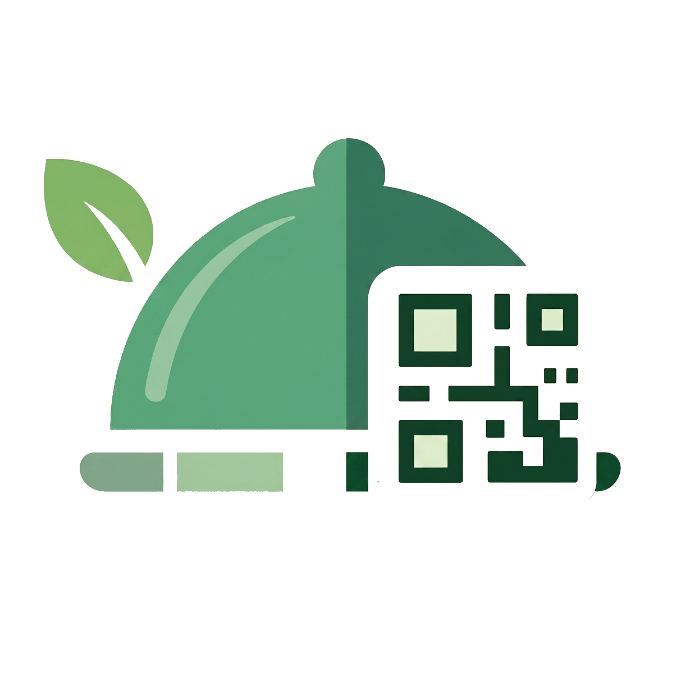

eatSmartly حمل النسخة التجريبيةeatSmartly مرن ويتكيف مع جميع أنواع المطاعم — من المقاهي الصغيرة إلى المجمعات الغذائية الكبيرة. اختر الوضع الذي يناسب نشاطك التجاري.
الحل الأمثل للمقاهي الصغيرة والمطاعم الناشئة التي تبحث عن نظام بسيط وفعال. يعمل الكاشير على جهاز واحد متصل بطابعة واحدة مباشرة عبر USB، مما يُبسّط الإعداد ويُقلل التكاليف إلى الحد الأدنى.
مصمم للمطاعم المتوسطة التي تضم أكثر من مطبخ أو محطة تحضير. يتم توزيع الطلبات تلقائيًا على كل طابعة حسب نوع الصنف أو الفئة، مما يُسرّع الإعداد ويُقلل الأخطاء بين القاعة والمطبخ.
الحل الكامل للمطاعم العصرية. يجمع بين كفاءة نظام نقاط البيع التقليدي وسهولة القائمة الرقمية عبر QR، مما يتيح للزبائن الطلب مباشرة من هواتفهم بينما يتولى الكاشير إدارة طلبات الكاونتر — كل ذلك في نظام واحد متكامل.
الحل الأشمل لإدارة مجمعات الطعام الكبيرة. يعمل كمنصة مركزية تجمع مطاعم متعددة تحت إدارة واحدة، مع الحفاظ على استقلالية كل مطعم في طلباته وتقاريره وعملياته اليومية.